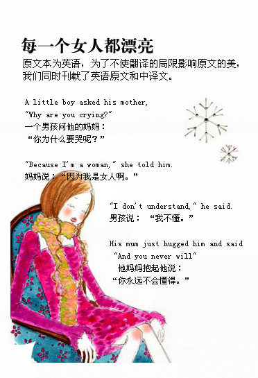
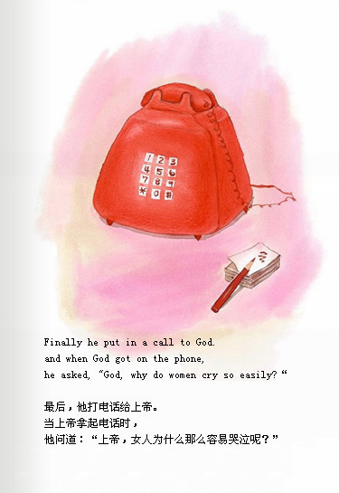
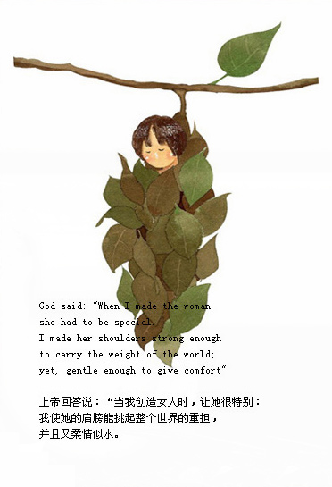
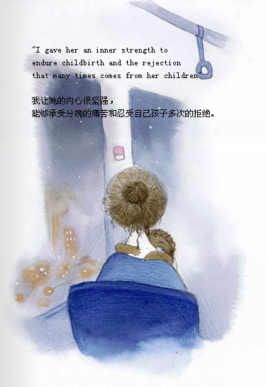
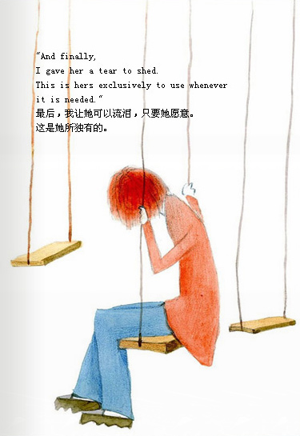

“女人的漂亮必须从她的眼睛中去看，因为那是她心灵的窗户和爱居住的地方”
有些道理
Bad news is most women are not made by this oldie crappie godie. This kind of stories are too old-school in the eyes of boys/men and non-made-by-this-oldie-godie women of this new-world.
I like this passage,very beautiful. I think when you cry,there is no reason. The God will smile.,
可爱的女人,爱哭的女人.....
为赋新词强说愁。恕我直言和我的没有礼貌！一时心情吧！我们都过于的纯洁！
人都有两面性.
能做到这些的，很少
这样做人，不光是女人，会不会太累哦
惊奇的发现倒数第二幅图到荡秋千的男孩是我北京家里浴室墙上的瓷砖。
每个女人都是个天使,当她遇到所爱的人,她愿意把她的翅膀摘下,为了他.她可以放下一切,因为爱的坚定,使她更懂得了真心.所以她不惜一切的让她所在呼的人快乐.
存档只读，评论已关闭。
Name (required)
Email (will not be published) (required)
Website
« 忙碌 | Easter澳洲第一峰摄影手记 - jiajialing »


10 Responses to “Every women is beautiful.”
2007-04-13
“女人的漂亮必须从她的眼睛中去看，因为那是她心灵的窗户和爱居住的地方”
有些道理
2007-04-13
Bad news is most women are not made by this oldie crappie godie. This kind of stories are too old-school in the eyes of boys/men and non-made-by-this-oldie-godie women of this new-world.
2007-04-14
I like this passage,very beautiful.
I think when you cry,there is no reason.
The God will smile.,
2007-04-14
可爱的女人,爱哭的女人.....
2007-04-16
为赋新词强说愁。恕我直言和我的没有礼貌！一时心情吧！我们都过于的纯洁！
2007-04-16
人都有两面性.
2007-04-16
能做到这些的，很少
2007-04-17
这样做人，不光是女人，会不会太累哦
2007-04-23
惊奇的发现倒数第二幅图到荡秋千的男孩是我北京家里浴室墙上的瓷砖。
2007-05-06
每个女人都是个天使,当她遇到所爱的人,她愿意把她的翅膀摘下,为了他.她可以放下一切,因为爱的坚定,使她更懂得了真心.所以她不惜一切的让她所在呼的人快乐.
Leave A Reply
存档只读，评论已关闭。